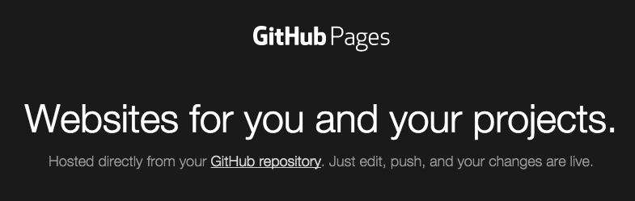
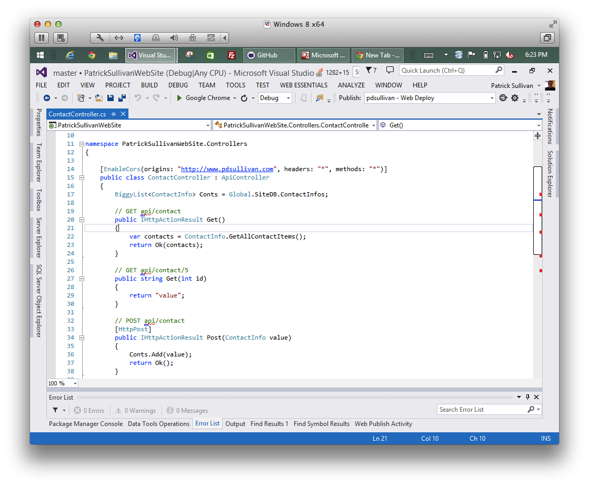

I was thinking to my self a while back that I do not like the cost benefit ratio I was getting from my hosting solution that I was using for my website. I had a shared hosting plan with 1&1.com who is also who I have purchased domain names through. I got a windows shared hosting plan so that I could run a ASP.NET website which is where I had allot of experience and I wanted to be able to test out and play some new technologies in that area.
What I ended up building was a ASP.NET Website project that delivered the html pages from the file system (as opposed to via MVC routing and controllers or another way) and then having Web API (2.2) to communicate to the backend code. The front end is an AngularJS app that makes the calls to the api on the backend. It was maybe overkill, but I wanted a way to do some logging and collect user input via a contact form. And, I especially wanted to play with Web API and AngularJS together (which is a match made in heaven if you ask me). So after running into a bunch of web.config issues with permissions in IIS on my shared hosting plan. Which is something I should have researched before to find out that most shared hosting on IIS gives you limited permissions so you can’t do some useful things.
I have run a view static web pages through GitHub Pages (https://pages.github.com), which is a great way to host some free static web content. And one of my favorite things about GitHub Pages is the ability to configure a custom domain name via CNAME setup for free. I have also played a bit with Azure and the free websites option through there. So I started thinking to my self that I could host my backend Web API and my front end separately with limited changes to what I am doing. Another decision I made early on that allowed me eventually do this and keep my hosting costs down was the decision to use Biggy by Rob Conery as my data store (https://github.com/robconery/biggy) and I have that running just using files in the file system.
So, now to doing this. To get my backend over to running on Azure was very easy, just download the deployment settings for a free website I set up (pdsullivan.azurewebsites.net), import them into Visual Studio and use the web deploy in Visual Studio (which is so easy and nice to use). Then I took all of the html, javascript, css, and UI resource files out of the Visual Studio solution and made a new Git branch called “gh-pages” which is the one that github will publish to github pages. I kept the same file structure that was in the Visual Studio project and moved it into the gh-pages branch. From there the pages loaded and looked fine after a few changes to some file names and stuff that now were messed up since github pages makes you have capitalization the same when you link to a file.
Now that the front end was up and running on GitHub Pages I needed to sort out the api calls from the angular that were now broken. I first just changed the URL’s in the javascript that were being used to make the ajax calls to point to the new location of the api (pdsullivan.azurewebsite.net/api/). But that didn’t get everything working, I had to deal with the cross domain issues that now were blocking the calls. After a little research I found out that ASP.Net Web API has some nice ways to enable CORS (Cross Origin Resource Sharing) in an api and it lets you specify the domains that can call to it, methods it can use, and headers. Here is a really good walkthrough that helped me out a bunch (http://www.asp.net/web-api/overview/security/enabling-cross-origin-requests-in-web-api). After that I was up and running and barring any crazy traffic my site is running for free!
